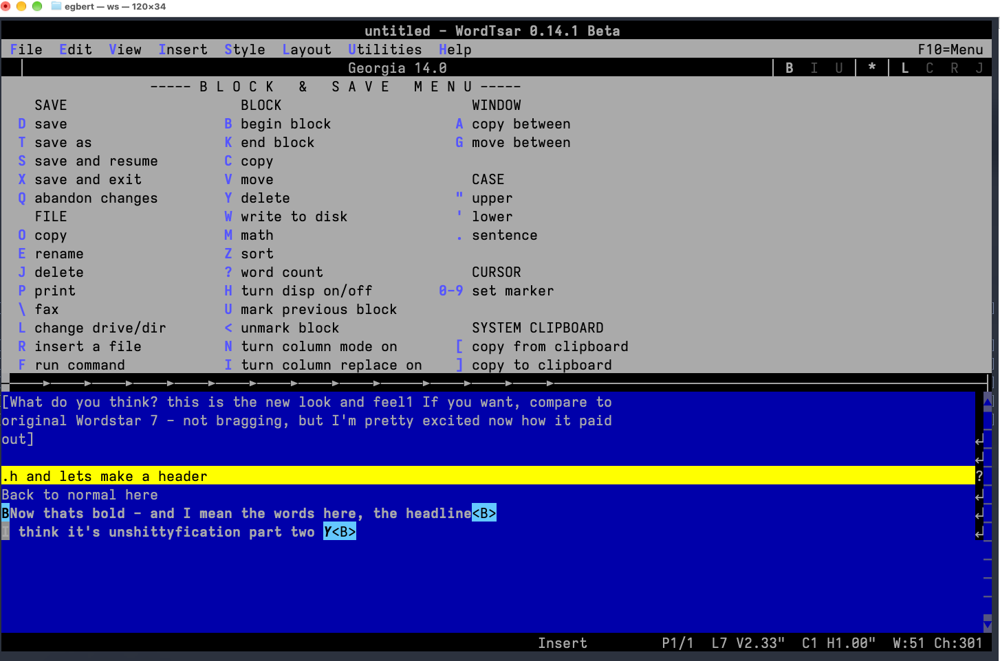
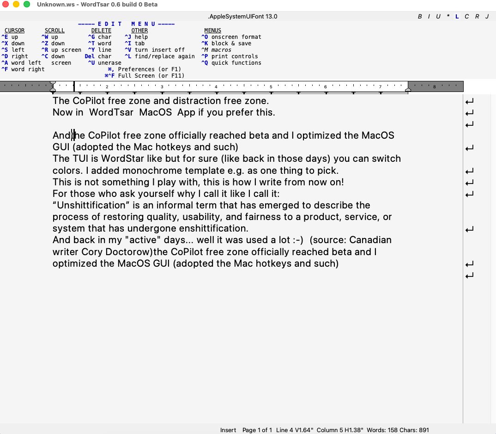
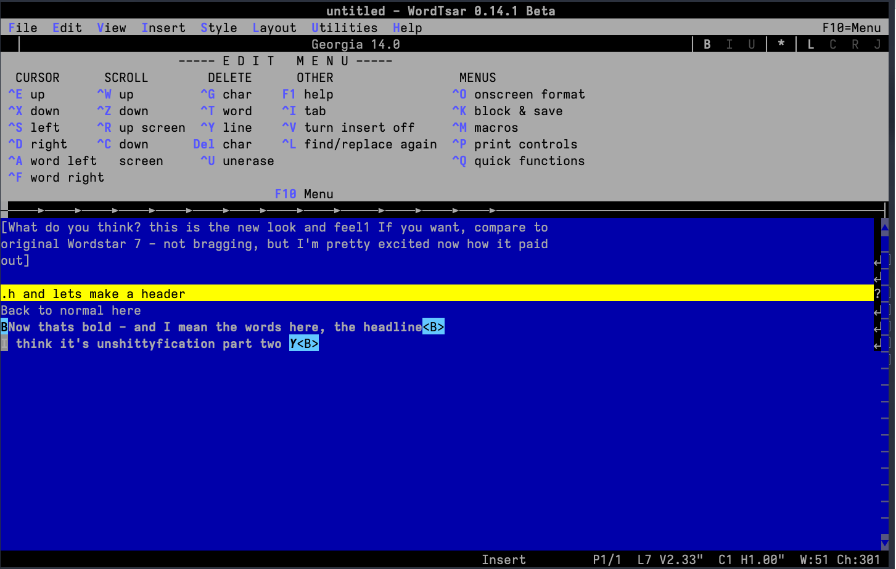
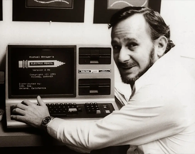

WordTsar opens your old WordStar files, answers to the same control-key commands, and leaves out everything that isn’t writing. Use it as a Mac app or in a terminal window.
Free and open source under the AGPL-3.0. Still Beta, and in daily use by its maintainer.

Both versions are built from the same source, open and save the same files, and share one editing engine. Install whichever you prefer, or both.

The Mac app. Mac shortcuts such as ⌘, for Preferences work alongside the WordStar keys.

The terminal version, for writing with no window chrome at all. Pick the WordStar 7 colours under System Preferences.
Not there yet: Word import brings over text, character formatting and basic page setup, but not tables, numbered lists, images, headers or footers. The full list of changes is in the release history.
WordTsar is Gerald Brandt’s. He designed it, wrote it and has maintained it for years: the editing engine, the layout and rendering, the WordStar 7 fidelity and the file formats. Nearly all the code here is his. He is also a novelist, and he writes his books in WordTsar.
This fork exists because I wanted that quiet place to write on one platform, with less to maintain. For Windows and Linux, use Gerald’s cross-platform project on SourceForge. wordtsar.ca is the project’s original home, with its history and forums.
This macOS fork isn’t endorsed by or affiliated with the upstream WordTsar project.

Found a bug or a missing command? Open an issue on GitHub and describe what you expected to happen.